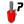
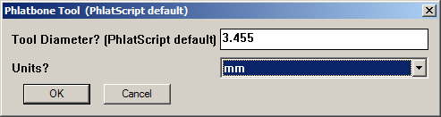

| Phlatboyz Command Toolbar | |
|---|---|
|  |
Tool Diameter -

This allows you to set the tool diameter that the Bones tool will use. This version of PhlatBone tools is integrated with SketchUcam. This allows it to fetch the current SketchUcam tool diameter and present it as the default in this dialog. 0.01" will be added to the bitdiameter to allow space for the inside or outside cut. In some cases this allowance will be too small and you will need to redraw the bones with a larger diameter. In many cases the generated inside/outside cut lines will contain very small arc segments which can confuse some controllers. If this happens remove the cutlines, select all the bone arcs, right click and select 'Explode Curve' . Now when you add cut lines they will be much simpler, containing only straight line segments. Alternately you can use a larger diameter for the bones. (PhlatScript default) is displayed when the tool could retrieve the bit diameter from SketchUcam. |
radBone Multi Inside - inserts radBones on the inside all the corners of a face. Just point at a corner to
see the proposed bones.
|
|
radBone Multi Outside - inserts radBones on the outside of a figure.
|
|
radBone Single - insert a radbone on a single corner.
|
|
tBone Multi Inside - inserts tBones on the inside corners of a figure. The bones will default to
one edge of the figure. If you want them on the other edge of the corners, simply press the SHIFT key before clicking.
|
|
tBone Multi Outside - inserts tBones on the outside corners of a figure. Press SHIFT to select the other edges.
|
|
tBone Single - tBone a single corner. Press SHIFT to select the other edge.
|
|